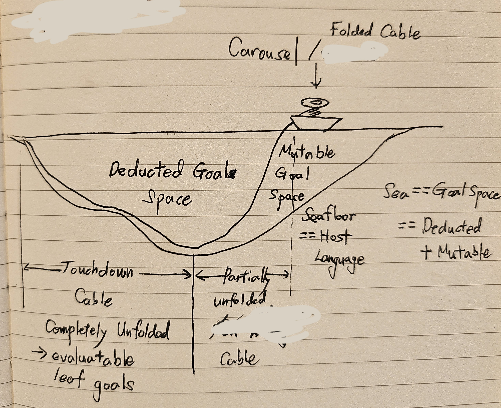

The Subsea Cable World¶
A program is not a sequence of function calls. A Subsea source file is a Voyage Plan for a Cable.

This sketch is the conceptual anchor for the language. The image is explanatory; the text below gives agents and implementations its precise meaning.
Every metaphor corresponds to an actual responsibility or state transition.
The complete picture¶
Surface: authored intent and the one Root
Voyage Plan (.vyg)
|
Subsea Cable Runtime
[ Vessel control + Cable data + Codebase + Scheduler + Host + composition ]
|
Folded Cable
~~~~~~~~~~~~~~~~~~~~~~~~~~|~~~~~~~~~~~~~~~~~~~~~~~~~~~~~~~~~~~~
| Sea = Goal Space
| undeduced occurrence = mutable
v
committed deductions ────●──── deduction frontier
=========================|====================================
Seafloor: Host-provided concrete computation
Touchdown Cable = grounded leaves of the realized voyage
Cable result = Fully Touchdown Cable (ordered hash list) + ordered segment outcomes
The real frontier is not one global point. A Goal DAG can have many branches, so the frontier is the set of Goal occurrences that have been exposed but not yet deduced.
Surface¶
The Surface is the intent visible to the author:
There is one Root, written root Name/inputArity. It names the default target
a caller lays; it carries no input and is not an instruction to execute the
entire Program eagerly. Each input sent into the laid Cable demands its own
Root occurrence, and deduction begins there.
The Sea: Goal Space¶
The Sea is the entire Goal Space addressed by the Voyage Plan. At any moment it contains both:
The Voyage Plan exists from the start; the concrete Cable does not. Its eventual Goal DAG is not required to be fully materialized or permanently fixed from the start. Vessel realizes it incrementally by asking Carousel to perform one demanded deduction and then publishing the committed slice to Cable.
Voyage Plan and Cable¶
The Voyage Plan is the authored source unit. It contains Goals, dependencies, routing, Anchors, and policy metadata. It selects a route through Goal Space, but it is not itself the Cable.
The Cable is the structural result progressively realized from that plan by deduction. It is not an instruction stream, bytecode, a virtual machine, or a Scheduler.
The Cable can exist in three related states:
| State | Precise meaning |
|---|---|
| Folded | The planned structure beyond an undeduced occurrence has not yet been exposed. |
| Partially unfolded | Some deduction results are committed, while newly exposed descendant occurrences remain undeduced and mutable. |
| Touchdown | Successive deductions have reached a concrete leaf. |
Partially unfolded never means “everything in this region is mutable.” Every completed deduction is already committed. Only occurrences that have not yet deduced themselves retain a mutable name-to-hash choice.
Reduction and Deduction¶
These terms are deliberately different.
Reduction is the language rule describing how one resolved Goal definition and its arguments produce subordinate structure or a leaf.
Deduction is the demand-driven Runtime event that applies that rule to one Goal occurrence:
undeduced Name/Arity occurrence
|
| demand
v
resolve the current alias to an ArtifactHash
|
v
apply the artifact's reduction rule
|
v
commit the chosen hash and resulting structure
Deduction is the commit.
An occurrence resolves its unqualified Name/Arity only when that occurrence
is demanded for deduction. The mapping may change until that instant. After the
deduction commits, later alias changes cannot rewrite it.
Children exposed by the committed deduction are new occurrences. Their existence and dependency position are committed, but each unqualified child retains its own lazy name-to-hash choice until it is itself demanded.
This is demand paging for Goal structure:
Name/Arity virtual address
name index page table
ArtifactHash immutable page identity
deduction demand page fault
deduction record committed mapping and expansion
A hash-qualified reference is already pinned to an immutable artifact, although its structural reduction may still remain lazy.
Mutable Goal Space¶
Mutable does not mean that an immutable artifact is edited in place. A change creates a new artifact and moves a human-readable alias:
An already deduced occurrence of B/1 remains bound to hash-1. An undeduced
occurrence may later bind to hash-2. Two occurrences of the same name can
therefore choose different artifacts when they are demanded at different times.
The deduction ledger makes this mutable future auditable. It records, for every deduction, at least the occurrence, requested name and arity, selected full hash, arguments, resulting structure, active lineages, and the observed codebase revision.
Vessel¶
The Vessel is the control plane, not the complete Runtime. It navigates the voyage's still-open structural future: the occurrence set, undeduced frontier, structural demand, Touchdown-window accounting, and publication of committed deduction results. The complete deployment is the Subsea Cable Runtime.
Vessel asks Carousel to apply one occurrence's reduction rule. After Carousel commits the selected hash and complete result, Vessel publishes the new slice to Cable as an append-only topology installation. Vessel does not carry channel frames, own the Outcome & Value Store, evaluate leaves, enforce output multiplicity, or propagate terminals.
An Agent or operator addresses the Runtime composition surface. Plan authoring
passes through Vessel's Codebase-facing control surface, while live Values and
terminals originate in Cable. The Agent—not Vessel—may respond by storing a new
immutable Goal artifact and moving a Name/Arity alias. An undeduced occurrence
can observe that revision when later demanded; committed history does not move.
The Runtime remains a logical participant while the voyage is under way. A compiler that emits Host code and permanently leaves the Vessel/Cable feedback loop is not a conforming general Runtime. “Remains” does not mean “runs as a daemon”: all components may share one process or library, or communicate across processes. The metaphor fixes authority, not packaging. See SCP-0006 and SCP-0015.
Laying a live Cable¶
A cable ship does not build a cable and hand it over finished; it lays it. The
outward caller asks the Runtime to lay a Goal target. Vessel creates the
voyage while Cable creates its live data-plane lifecycle; the handle is returned
only after both exist. The result is a live
Cable with two ends. Inputs are sent into the left end. Values that the
authored Goal DAG does not route onward leave the right end for the outward
caller. Every authored Goal connection behaves as a channel-equivalent edge:
FIFO, waiting when empty or full, and never treating silence as an ending.
One input travels through the Cable as one result segment. Values inside
the segment may flow at once and set off downstream work, but the next input
waits at the left end until the current segment's EndOfResult has reached the
right end and every operation it caused has drained. EndOfResult closes one
segment and carries its outcome; a failed or cancelled segment ends only
itself, and the next input proceeds.
decommision stops the left end from accepting more input. The accepted
segments drain. One segment ends only after Vessel reports that no reachable
structural work remains and Cable reports that installed work has drained.
After decommission, EndOfStream additionally waits for Vessel to close
topology publication and for Cable to drain every segment, channel, and attempt.
It then reaches every connected consumer and the whole Cable stands down.
EndOfStream carries no verdict of its own: the
result is the Fully Touchdown Cable plus one ordered outcome per admitted
input. lay, send, and decommision are Runtime operations, not Voyage syntax;
lay initiates Vessel control, while sends, pin leases, and decommision
belong to Cable lifecycle. The live Cable is a Runtime capability, never a
Subsea value. See
SCP-0014.
A Goal promises how many Values each successful segment yields: /0, /1, or
/N. The promise is part of the Goal's signature and structural identity. The
Host signals its invocation terminal; Cable enforces the promise at the channel.
Carousel¶
Carousel is Vessel's demand-scoped atomic deduction mechanism. For the one occurrence Vessel supplies, Carousel resolves its current alias when applicable, applies the selected reduction rule using supplied arguments and resolved values, and commits one complete deduction record or no successful record.
Carousel does not choose demand, own the occurrence set or frontier, replenish
a Touchdown window, publish topology, route live channel Values, read Cable
state, evaluate grounded leaves, or decide scheduling policy. When reduction
needs a routed value, Vessel requests that exact value from Cable and supplies
it to Carousel. When reduction needs primitive semantics such as x + 1, the
Host still supplies their concrete meaning.
Folded Cable and the undeduced frontier¶
The Folded Cable is planned structure not yet exposed as occurrences. The undeduced frontier is different: those occurrences already exist in committed structure, but their own reductions have not committed.
A partially unfolded path can contain committed deductions followed by an undeduced frontier and then Folded Cable. Only the frontier and what remains folded behind it preserve the opportunity to observe a later alias binding. “Folded Carousel” is not a state; Carousel is the engine operating on these states.
Touchdown and Touchdown Cable¶
Touchdown occurs when successive deductions along a path reach one of the two concrete leaf forms:
- an arrow-function leaf belonging to a named Goal;
- a
$Anchorleaf.
Touchdown is not a second kind of commit. It is the terminal structural state of a chain of already committed deductions.
Touchdown also does not mean that the leaf has run, succeeded, or satisfied its downstream dependencies. It means only that a grounded evaluation instance is available to the Scheduler.
The Touchdown Cable is the collection of paths currently deduced all the way to leaves. Committed intermediate deductions outside those completed paths are still committed even though their descendants have not yet reached Touchdown.
A decommissioned and drained Runtime publishes a Fully Touchdown Cable as a canonical ordered list of grounded evaluation-instance content hashes, the segment lists concatenated in admission order. Structural sharing of a Goal node does not collapse instances reached through distinct occurrences or routed arguments. “Fully” describes every item in that list: each is a grounded leaf, not an intermediate Goal. It does not force deduction of merely possible or undemanded future occurrences. Occurrence IDs, lineages, cable positions, and reverse mappings from intermediate deductions belong to a provenance sidecar, not to Touchdown content identity. Vessel supplies immutable deduction/position provenance, Cable supplies completed segment order and drainage proof, and a stateless Runtime composition layer assembles the result after their completion handshake. This lets a later voyage reuse unchanged segments while recording new immutable deductions for its new occurrences. See SCP-0004.
Seafloor: Host Language¶
The Seafloor is the implementation plane where Goal structure reaches concrete Host-provided computation.
Both leaf forms are Host-provided:
arrow-function leaf -> Host evaluates the Subsea expression body
$Anchor leaf -> Host resolves and invokes the named capability
The Host also supplies primitive semantics needed while Carousel is reducing Goal arrows, including numeric representation, operators, comparisons, and ordinary value operations. Subsea specifies their syntax and structural role; the Host supplies their concrete meaning.
$ distinguishes an opaque named Host capability from an inline
arrow-function implementation. It does not distinguish “Host computation” from
“non-Host computation”; both are grounded in the Host language.
Subsea itself owns no native effects. Effects can occur only through explicit
Host capabilities such as $send, $insert, or $open.
Anchor¶
An Anchor is the opaque $Identifier leaf form:
Subsea preserves its identifier, arguments, arity, occurrence, policies, and lineages. The Host owns lookup, signature compatibility, invocation, result, and implementation failure.
Anchoring policy uses @policy separately. A policy attaches How metadata to
the following structural occurrence; it does not change topology.
Scheduler¶
The Scheduler receives grounded evaluation instances and structural occurrence
metadata. It decides execution eligibility and interprets @policy.
It may choose sequential, parallel, distributed, retried, cancelled, or other execution strategies. The language structure declares dependencies and routing, not success criteria or failure policy.
Vessel -> which occurrence is demanded and what committed structure is published
Carousel -> how one requested occurrence is atomically deduced
Cable -> installed topology, Values, channels, outcomes, and terminals
Host -> what concrete computation means and how it is invoked
Scheduler -> when and under which policy grounded work is attempted
Runtime -> the deployment-neutral whole and outward composition surface
Goal identity survives Touchdown¶
A concrete function or Anchor is not itself a Subsea Goal. A grounded leaf evaluation instance nevertheless retains the Goal occurrence, selected artifact hash, arguments, and lineages that reached it.
The precise statement is therefore:
Touchdown is a grounded Goal occurrence reaching a concrete leaf implementation.
This allows the Scheduler and Host to act on concrete computation without discarding structural identity and provenance.
Source representation¶
Subsea Cable Voyage Plans use the .vyg extension:
The official language name is Subsea Cable. Its visual short mark is
__C. The mark is branding, not a source identifier, namespace, package,
or generated symbol.
The three sentences¶
A program is not a sequence of function calls. A Subsea source file is a Voyage Plan for a Cable.
Functions implement grounded Goals. Schedulers decide their eligibility and outcomes. Subsea Cable represents Goals.
Reduction defines the structural law. Deduction commits that law one demanded occurrence at a time.